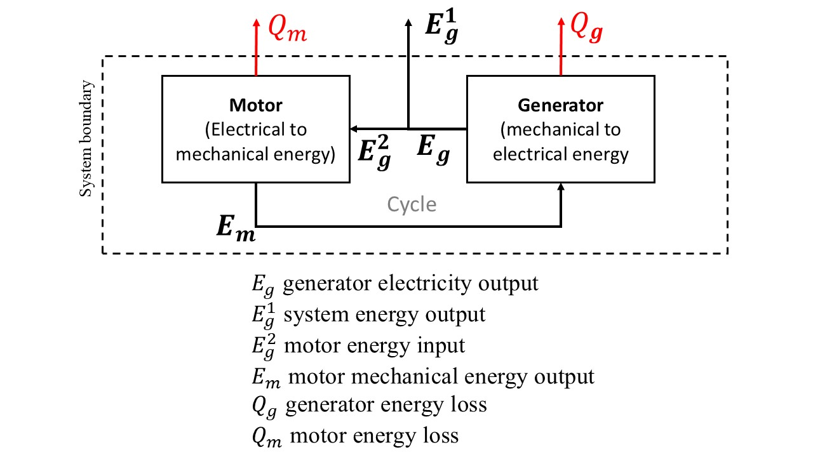
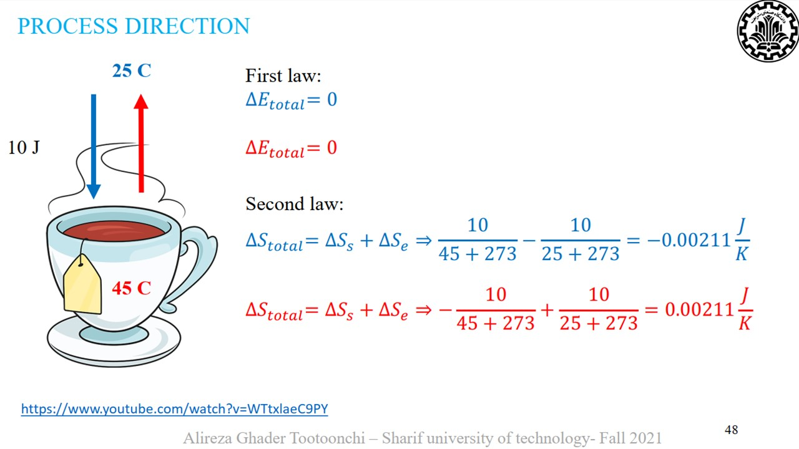

Let's start with the First Law of Thermodynamics (Conservation of Energy) for a Generator:
Em = Eg + Qg
Thus, the efficiency of the generator is:
ηg = Eg / Em = (Em - Qg) / Em = 1 - Qg / Em
The First Law of Thermodynamics for a Motor:
Eg = Em + Qm
Thus, the efficiency of the motor is:
ηm = Em / Eg = (Eg - Qm) / Eg = 1 - Qm / Eg
Substituting the first equation into the second:
Eg = Eg + Qg + Qm ⇒ Qg + Qm = 0
The losses can't be negative, so:
Qg = Qm = 0 ⇒ ηg = ηm = 1
However, according to the Second Law of Thermodynamics (Kelvin-Planck): "It is impossible for any heat engine to convert all the heat taken from a hot source into work without some heat being rejected to a cooler source." In simpler terms, a machine with 100% efficiency is as mythical as a unicorn.
Notice that the first law isn’t violated here. We concluded that for this system to work, all components must have 100% efficiency, meaning no losses. But then the second law crashes the party, saying, "No way, buddy! There will always be losses."
Now, let's see what kind of thermodynamics the person who claims this machine can work (and even light a few bulbs) is using. To have surplus energy, we need:

As you can see, we don’t even need the first law here. Nothing enters the system's boundaries, but it still outputs energy! Now let’s apply the first law.
The First Law of Thermodynamics for a Generator:
Em = Eg + Qg ⇒ Em = Eg1 + Eg2 + Qg
For the Motor:
Eg2 = Em + Qm
Substituting the second equation into the first:
Em = Em + Qm + Eg2 + Qg ⇒ Qm + Eg2 + Qg = 0
Since each term is non-negative, Eg2 must be zero.
For thoroughness, let’s rewrite the above equations assuming efficiency:
For the generator:
Eg = ηg Em ⇒ Eg1 + Eg2 = ηg Em
For the motor:
Em = ηm Eg2
Substituting the second equation into the first:
Eg1 + Eg2 = ηg ηm Eg2 (ηg ηm = ηsystem)⇒
Eg1 = (ηsystem - 1) Eg2
Since Eg1 is positive and we have surplus energy, the right side must be positive, resulting in ηsystem > 1!!!
Earlier, we said 100% efficiency is impossible. Now we have efficiency greater than 1, great! In this case, even the first law is violated because energy is being created from nothing.
Why is 100% Efficiency Impossible? The culprit is the second law of thermodynamics, which states that no process can occur without producing entropy. You can't reduce the total entropy of a system and its surroundings.
Why total? Because, for example, in a refrigerator, we lower the heat and entropy inside, but we dump more heat (since we consume electricity) into the surroundings. The increase in environmental entropy exceeds the decrease inside, so overall, entropy increases.
Entropy determines the direction of processes. See the image below:

I made this picture when I was a teaching assistant in process engineering course.
We have a 45°C cup of tea in a 25°C environment, exchanging 10 joules of energy. No problem there, and the first law holds since: Energy lost from the tea = Energy gained by the environment (red equations) But why not write: Energy lost from the environment = Energy gained by the tea (blue equations)?
This is where the second law kicks in, showing that for the first case, the total entropy change is positive (meaning entropy is produced), while for the second, it’s negative. Hence, the second scenario is impossible.
How does this relate to our equations? By combining the first and second laws with exergy theory, we can write the exergy equation as:
EXin = EXout + EXloss + EXdestruction
As you can see, besides losses (part of the energy being lost), there’s another term, Destruction of exergy, caused by entropy production:
EXdestruction = T0Sg where T0 is the environment's temperature in Kelvin and Sg is the entropy produced. Since Sg is always positive (zero for reversible processes, which are theoretical and never occur in practice), some energy is always destroyed.
In summary, this system violates both the first and second laws, and understanding it doesn’t require electrical circuit knowledge—just a bit of thermodynamics is enough! :))